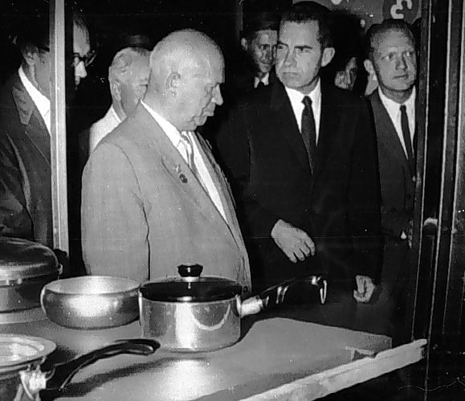

1951-1960.html
Russia: 1951-1960

Nikita Khrushchev played a large role in the Communist Party in the Soviet Union during the 1960's although he was premier only from 1958-1964. For a short chronology of Khrushchev's life, click here. He moved through the ranks of the party, first becoming secretary of the Communist party in the Ukraine and finally becoming first secretary of the party in 1953. At the 20th party congress in 1956, Khrushchev gave a secret speech criticizing the actions of Stalin. As this was the first time anyone had openly discussed and criticized Stalin, it had far-reaching effects.
The United States and the Soviet Union enjoyed fairly good relations at this time until a U.S. spy plane was shot down during a reconnaisance mission over the Soviet Union. The pilot of the plane, Gary Powers, was captured and held in Soviet prison for several years until he was exchanged for a Soviet spy. For the Gary Powers story (in Russian), click here.
Although a summit in Paris was canceled due to this event, the Vienna Conference was held in 1961 between JFK and Khrushchev in an attempt to resolve the German question. For a briefing on the stragey used to approach Khrushchev during this conference, click here. Nothing came of this conference, however, and the Berlin Wall was soon built.
Khrushchev visited the United States several times. Once he visited California where he learned he was to visit housing projects and was not allowed to visit Disneyland. For the story of how Khrushchev reacted, click here.
The closest the United States and the Soviet Union came to war was in 1962 as a result of the Cuban Missile Crisis. Khrushchev placed missiles in Cuba as a result of the Bay of Pigs invasion. They were removed when the United States agreed to not make another attempt to overthrow communism in Cuba.
Nikita Khrushchev died in 1971 and was denied a state funeral and internment in the Kremlin Wall. He was buried at Novodiechy Convent and Cemetary. For a picture of his grave, click here.